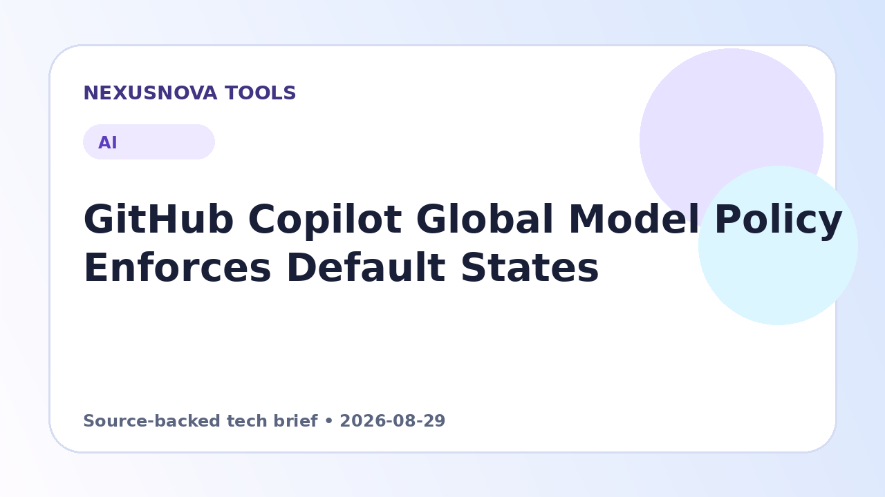

GitHub Copilot Global Model Policy Enforces Default States
GitHub has officially launched the general availability of its global model policy, standardizing how enterprise plans inherit Copilot model access.
Published 2026-08-29 • NexusNova Editorial Team

Understanding the Policy Enforcement Rollout
GitHub has begun gradually rolling out its global model policy enforcement for GitHub Copilot Business and Copilot Enterprise accounts. The implementation, scheduled to complete by September 1, standardizes how unconfigured and newly introduced models inherit availability rules within an enterprise.
Under this updated structure, any model that has not been explicitly configured by an administrator will transition to a dynamic state known as 'Delegate to default policy.' If the global default policy is active—which is the standard configuration—those unconfigured models automatically become available to end users. Administrators retain the ability to modify the default state at any time, instantly applying updates across all affected models.
Exclusions and Model Management States
To ensure administrative oversight and regulatory safety, GitHub explicitly excludes certain model types from automatic default enablement. Open-weight models, such as DeepSeek and Kimi K2, along with any models operating outside of GitHub's standard data retention agreement (such as Fable 5), remain turned off by default regardless of the overarching policy setting.
Moving forward, organization settings will reflect four distinct operational states for each model: explicitly Enabled, explicitly Disabled, Delegated to enterprise teams/apps or organizations, or Delegated to default policy. Manual configurations previously established by enterprise administrators are fully preserved and will not be overwritten by the automated system.
Future Outlook and Policy Intentions
GitHub is currently soliciting feedback on potential future iterations of the management interface. The team is exploring whether to eliminate the passive 'Delegate to default policy' status in favor of requiring explicit administrative decisions for every model, ensuring that model access reflects conscious administrative choices rather than automated inheritance.
Practical next steps
- Review your GitHub Copilot admin settings to inspect the active global default policy state.
- Verify explicitly configured models to ensure existing enabled or disabled choices align with company compliance requirements.
- Identify any open-weight or non-standard data retention models that require manual enablement if your team intends to use them.